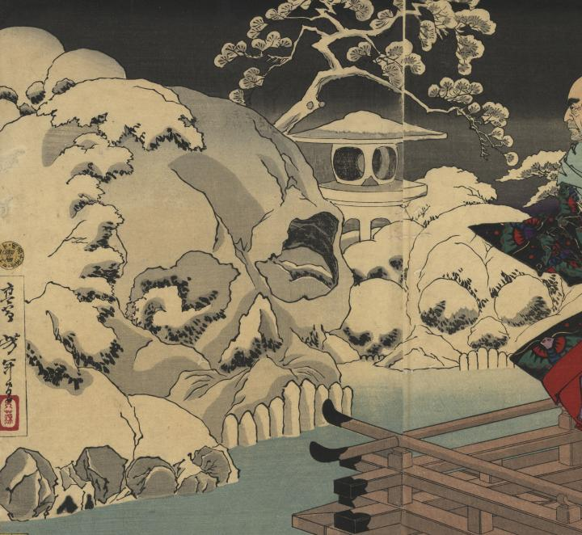

庭園に出現した髑髏たち。降り積もった雪の塊それぞれが、髑髏を形作っている。
著作者：芳年／出典：親書誌：U426_nichibunken_0309：平相國清盛入道浄海；ヘイ ショウコク キヨモリ ニュウドウ ジョウカイ／日付：2014／資源識別子：U426_nichibunken_0309_0001_0000
Copyright (c)2010- International Research Center for Japanese Studies, Kyoto, Japan. All rights reserved.